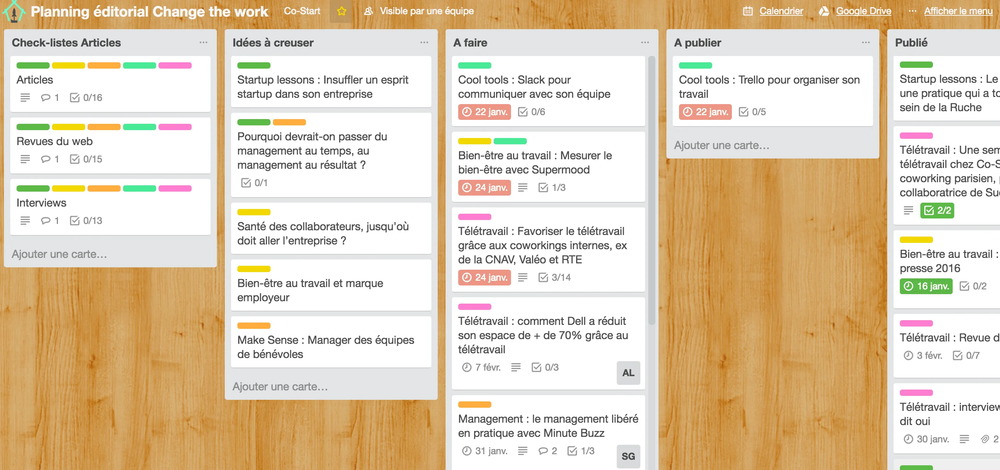

Veille technologique
1 - Introduction
Il est nécessaire et même indispensable dans une veille technologique d’optimiser et d’améliorer ses connaissances et ses compétences par la pratique. Apprendre c’est aussi assimiler, comprendre et utiliser afin de posséder l’information utile en toute circonstance. Le monde du développement est en constante expansion, les nouvelles tech sortent très régulièrement et il est important de savoir récupérer, trier et se renseigner sur les domaines dans lesquels nous évoluons.
De nombreux outils sont à disposition pour effectuer une veille en bonne et due forme, j’ai donc misé sur les plus simples d’entre eux et des logiciels que j’utilise régulièrement: Discord, Twitter, Google News, Youtube…
2 - La méthode Agile
La méthode agile regroupe de très nombreux savoir-faire et un vocabulaire étoffé. Elle se manifeste par 4 valeurs fondamentales : L’équipe, l’application, la collaboration et l’acceptation du changement.
Elle prône principalement ces principes :
- Satisfaire le client en priorité
- Accueillir favorablement les changements
- Livrer le plus souvent possible les versions opérationnelles
- Assurer une coopération permanente entre le client et les équipes
- Construire le projet autour de personnes motivées
- Privilégier le face à face ou la Webcam
- Mesurer l’avancement du projet en matière de fonctionnalités
- Garder un rythme
- Faire simple
- Responsabiliser les équipes
- Ajuster les comportements en fonction des processus
La méthode agile va de paire avec la méthode scrum, pour insister sur le principe d’agilité dans le processus de développement. L'intérêt étant de gagner du temps, optimiser le budget et les échanges avec le client afin que celui-ci soit le plus satisfait possible du produit en cours de développement et final. Le principe le plus important de la méthode scrum est le sprint et la rétrospective. Ci-dessous un schéma qui résume le fonctionnement et le squelette de la méthode agile par rapport à une méthode dite “classique”.

Il est important de noter que cette méthode a pour objectif principale la satisfaction du client tout en optimisant le processus de développement au sein de l’équipe. Une structure saine avec un mode de fonctionnement spécifique est le noyau d’un projet réussi.
La planification et l’utilisation de nouveaux outils est primordiale dans la mise en place de la méthode agile. Définir une planification, une estimation de l’effort, un changement de périmètre, les rôles, les boards ou artifacts, les caractéristiques est une étape fondamentale avant, pendant et après chaque projet. Chaque sprint doit être encadré, rythmé et correctement défini afin que l’équipe scrum réalise ce qui doit être fait.
L’outil le plus important dans un sprint est le scrum board. Il se présente souvent sous des cartes (Todo, on going, done) avec les tickets à effectuer pour l’intégralité du sprint. Il est rare mais possible que des tickets soient ajoutés pendant le sprint mais il est préférable de finir un sprint avant d’ajouter des fonctionnalités ou des tâches.
Trello, Jira Software, Asana, Airtable, Monday.com sont des scrum board très utilisés par les entreprises pour gérer leurs plan de sprint. Il est néanmoins possible de trouver des scrum boards fait maison dans des entreprises ayant des besoins de fonctionnalités personnalisées.
Rédigé le 26 juin 2024 -
Sources utilisées :
- https://slack.com/intl/fr-fr/blog/collaboration/methode-agile
- https://www.youtube.com/watch?v=anZcEIQlpoY
À propos
Contact
lworms@la-joliverie.com
06.81.52.05.50